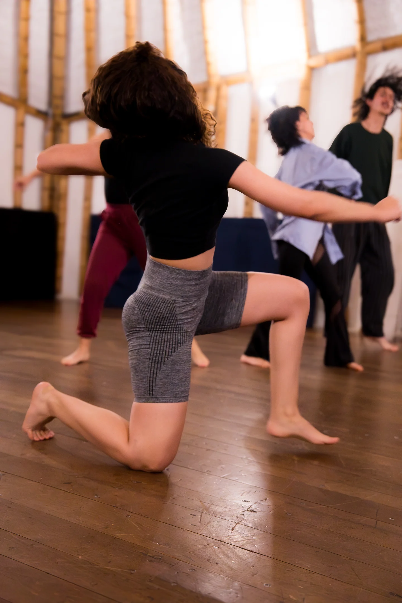
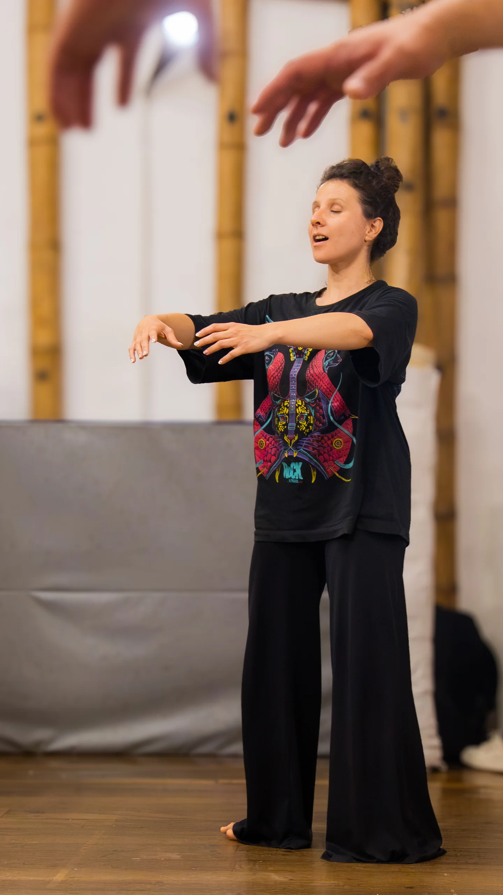
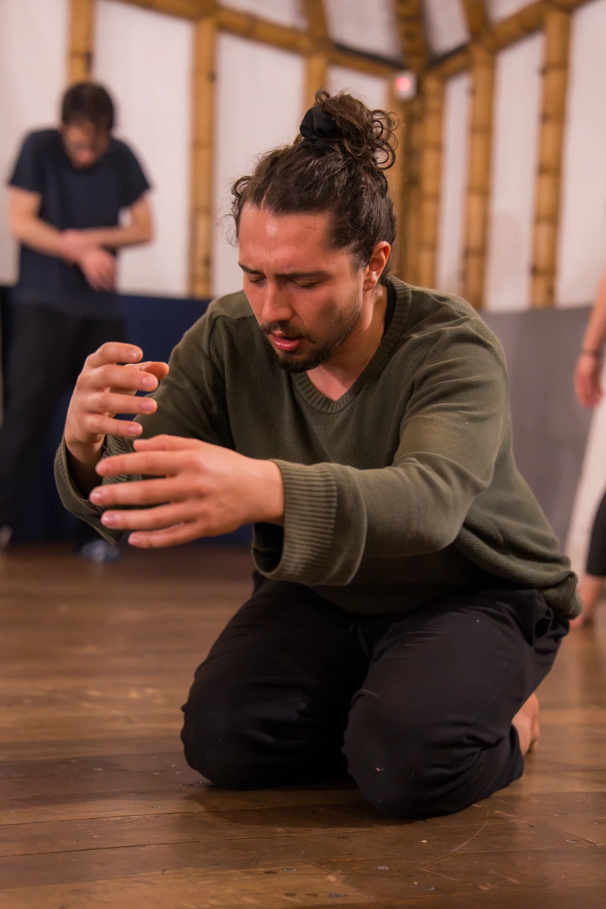

Pedagogías
Talleres, laboratorios y encuentros a partir del cuerpo-contexto

El cuerpo-contexto es un territorio atravesado por historias, memorias, condiciones sociales y vivencias. Partimos de ese contexto para crear: de lo que cada persona trae, de sus relaciones y de las prácticas que comparte con su comunidad.
El trabajo con el cuerpo, la voz y el juego permite reconocer, organizar y compartir esas experiencias en escena. La creación se construye con las personas y desde su territorio, como un espacio de encuentro, cuidado y reflexión colectiva.


Entornos empresariales
Diseñamos experiencias para equipos a partir de las herramientas de las artes escénicas.
ExplorarExplorar las posibilidades
Dentro de una clase.
Un registro del trabajo de entrenamiento corporal y atención compartida.
Aprender también es crear mundos.
Conversemos →